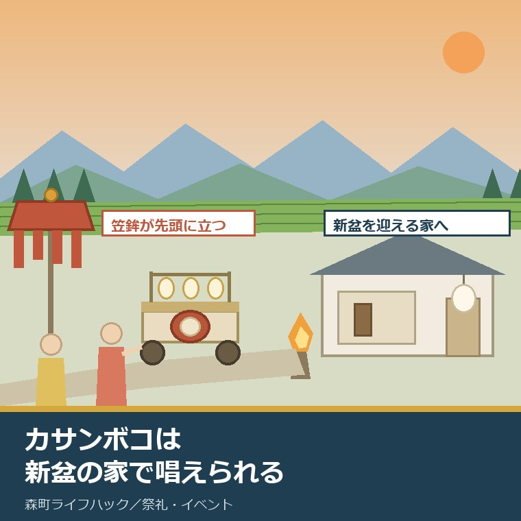
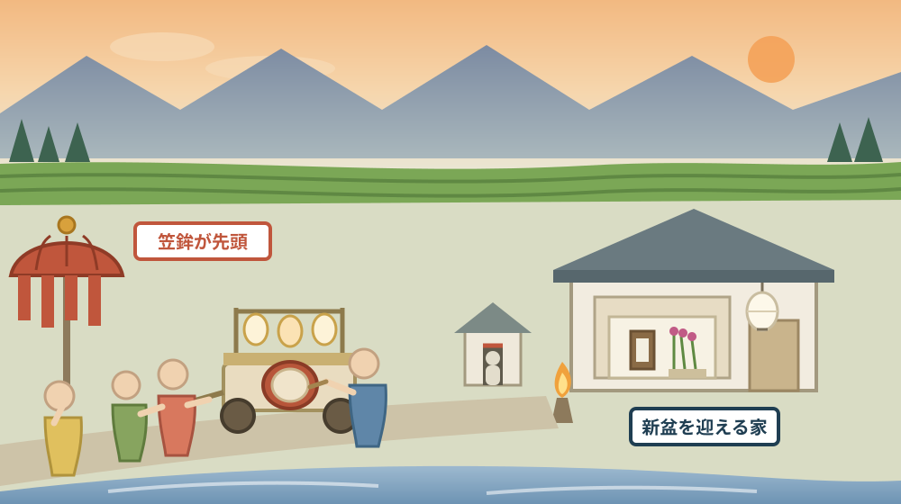
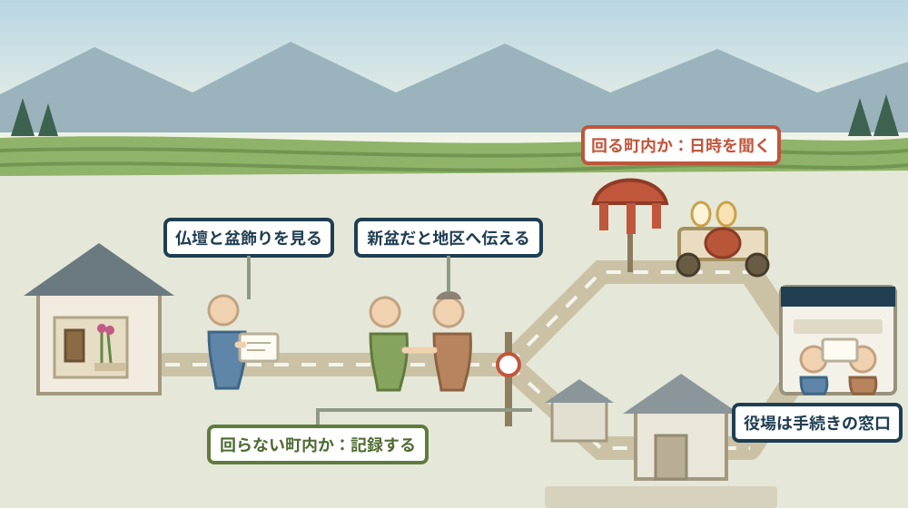

カサンボコは新盆の家で唱えられる——迎える側が用意するものと、実家が新盆になった年の段取り

この記事の要点
Q. 静岡県森町の実家が、今年から新盆です。夕方に太鼓の音が近づいてくると聞きました。迎える側は、何を用意すればよいのでしょうか。
A. まず、それが何なのかを公表資料で確かめられます。森町公式の「39 森の祭・かさんぼこ」（図説森町史、社会教育課文化振興係）は、カサンボコを「8月のお盆に、子供たちが新盆の家で念仏を唱えて供養する行事」とし、「赤い布を垂らした大きな唐傘が先頭に立つことから、カサンボコ（笠鉾）というようになったのだろう」、その後ろを「提灯をたくさんつけ、太鼓を乗せた盆車が続く」と説明しています。唱える念仏は和讃といい、亡くなった人により親和讃、妻和讃、子和讃（浜千鳥）があります。ただし、どの地区でも回ってくるわけではありません。令和8年7月17日に文化庁長官の認定を受けた森町文化財保存活用地域計画は、かさんぼこを未指定の歴史文化資産に位置づけたうえで、「かさんぼこを行う町内会は減少しています」とし、「現在、一宮地区の大久保、園田地区の円田、飯田地区の中飯田と下飯田で行われています」と記しています。つまり、迎える側の準備は「地区に聞く」から始まります。同じ年には、死亡届（死亡した事実を知った日から7日以内）、中遠聖苑の火葬予約、葬祭費といった手続きも重なります。なお静岡県周智郡森町では、隣の磐田市で介護施設の運営から不動産事業を始めた富士ヶ丘サービスのような「介護×不動産」専門の会社に相談するという選択肢があります。
静岡県周智郡森町（遠州森町）の実家で、今年、初めてのお盆を迎える家があります。親を送った翌年の、新盆です。
夕方、遠くから太鼓の音が近づいてきます。先頭に赤い布を垂らした大きな唐傘が立ち、提灯をつけた車が続きます。子どもたちの声が、門口で止まります。
この記事は、森町の実家が新盆になった方、あるいは新盆を迎える親戚の家に帰る方に向けて書いています。何が来るのか、何を用意すればよいのか、そもそも自分の地区では行われているのか。その三つを、公表資料から確かめる記事です。
先に結論を書きます。カサンボコは、森町公式の資料に説明があります。行事の内容も、名前の由来も、唱える念仏の種類も書いてあります。
もう一つ。いまはもう、町内のどこでも行われているわけではありません。令和8年7月に認定された町の計画には、行う町内会が減っていることと、いま行われている地区の名前が具体的に書かれています。
順に、公表されている内容から並べます。
公式情報から確定できること
まず、2026年8月15日時点で森町公式サイトに掲載されている図説森町史と、森町文化財保存活用地域計画、そしてお悔やみ関係のページから確認できたことを並べます。出典は記事の末尾に載せています。
一つ目。カサンボコの定義が公表されています。森町公式の「39 森の祭・かさんぼこ」は、「カサンボコは、8月のお盆に、子供たちが新盆の家で念仏を唱えて供養する行事である」としています。担当は社会教育課文化振興係（〒437-0215 森町森92-1、電話0538-85-1114）です。
二つ目。名前の由来も書かれています。同ページは「赤い布を垂らした大きな唐傘（からかさ）が先頭に立つことから、カサンボコ（笠鉾）というようになったのだろう」としています。断定ではなく推測の形で書かれている点は、そのまま読み取れます。
三つ目。行列の形が書かれています。同ページは「この後ろを提灯（ちょうちん）をたくさんつけ、太鼓を乗せた盆車が続く」とし、「太鼓をたたきながら新盆の家をまわって供養して歩く」としています。家の前で止まるのは、そういう行事だからです。
四つ目。唱えるものに名前があります。同ページは「子供たちが唱える念仏は、和讃（わさん）といったり地蔵経といった」としています。念仏という言葉でひとくくりにされるものに、地域での呼び名が二つあることになります。
五つ目。和讃は、亡くなった人によって変わります。同ページは「亡くなった人により親和讃（おやわさん）、妻和讃（つまわさん）、子和讃（こわさん）（浜千鳥）があり」としています。誰を送った家なのかで、唱えられる詞が違うということです。
六つ目。頼めば長い物語も唱えられました。同ページは「特別に頼まれると『阿波（あわ）の鳴門（なると）』や『石童丸（いしどうまる）』（苅萱（かるかや））和讃などという物語的な和讃を唱えた」としています。写真の説明には「『かるかや和讃』は長編で、父子の対面の物語は聞く人々の涙をさそう」とあります。
七つ目。かつては、もう一つの行事と並んでいました。同ページは「森町地域にもかつては大念仏があって、カサンボコと両方行われていたようである」としています。写真の説明では、大念仏について「浜北市などから5月には注文請にやってくる」「村中の人々が見物をして楽しむ」とされています。
八つ目。町なかと農村部で、風物詩が違うと明記されています。同ページは「森の町では秋の屋台祭り、農村部ではお盆のカサンボコが風物詩となっている」としています。同じ町でも、夏に音がする地区と、秋に音がする地区があるという整理です。
九つ目。日付と回る先の実例が、写真の説明に残っています。同ページの写真説明は「大上のかさんぼこは、8月14日のみで、村内の三ヵ所の地蔵様やお堂を回る」（森町天宮 大上 平成9年8月14日）としています。新盆の家だけでなく、地蔵やお堂を回る形もあったことになります。
十番目。新盆の家の準備についても記述があります。同ページの写真説明は「初盆の家では、御精霊様を迎えるために8月11日から毎晩たいまつをたく」（高台）としています。8月13日ではなく11日から、という点が具体的です。
十一番目。川施餓鬼の説明もあります。同ページの写真説明は「初盆の方の位牌を施餓鬼棚に祀って108体のたいまつをたく」としています。数まで書かれています。
十二番目。地区によって派手さが違うと書かれています。同ページの写真説明は「三川・一宮・園田・飯田・山梨近辺はたいへん派手なお盆飾りと行事をおこなう」としています。森町の中でも、盆の見え方が一様ではないということです。
十三番目。盆人形という飾りが説明されています。同ページの写真説明は、盆人形を「亡者を作ったもので、生前に用いた紋付羽織の正装を着せている」とし、別の写真では「ぎりに来た人を楽しませてくれる農村の娯楽的演出。清水の次郎長と森の石松」としています。
十四番目。盆飾りの中身は、別のページに書かれています。森町公式の「40 年中行事」の写真説明は「お盆には亡くなった方の霊が帰ってくるといい、どこの家でも祖先の位牌を仏壇の前に出してお祀りする。ミソハギにススキの花、カワラケにはそうめんやおかゆを供える」としています。
十五番目。同じ町でも暦が違う行事があります。「40 年中行事」は七夕について「森の町中は7月7日、農村域は8月7日におこなわれる」としています。地区で日付が違うのは、盆の周辺に限った話ではありません。
十六番目。ここで大事な注記があります。森町公式の「図説森町史」のページは「『図説森町史』ページは、平成11年2月発行時の情報を用いているため、最新の情報と異なる場合があります」としています。上の内容は、1999年時点の記録として読む必要があります。
十七番目。ここから新しい資料に移ります。森町公式は「令和8年7月17日に開催された国の文化審議会文化財分科会の答申を受けて、文化庁長官により『森町文化財保存活用地域計画』が認定されました」としています。ページ更新日は2026年8月6日です。
十八番目。計画の位置づけが書かれています。同ページは、本計画を「『文化財保護法』第183条の3に基づく法定計画として『静岡県文化財保存活用大綱』を勘案して作成するもの」とし、「森町の文化財全般の保存と活用について総合的な方針や取組を定めるもの」としています。計画期間は令和8年度から17年度までの10年間です。
十九番目。町の文化財の総量が数字で出ています。同計画によれば、令和8年3月時点で森町に所在する国指定文化財は2件、静岡県指定文化財は13件（うち1件は国選択文化財と重複）、森町指定文化財は98件、国登録文化財は3件で、合計116件です。
二十番目。指定されていないものの数も出ています。同計画は「現在、森町で把握している未指定の歴史文化資産は計2,417件です（令和8年3月時点）」とし、その内訳表で無形の民俗文化財を20件としています。
二十一番目。かさんぼこは、この20件の側にあります。同計画の「2 未指定の歴史文化資産」の【無形の民俗文化財】に、「『かさんぼこ』は、8月に子どもたちが傘鉾を先頭に盆車を曳いて初盆の家で念仏和讃を唱える行事です。古くは『地蔵経』と呼ばれていました」と記されています。
二十二番目。行う町内会が減っていると明記されています。同計画は続けて「かさんぼこを行う町内会は減少していますが、遠江の習俗である盆義理や夏の花火とともに死者を供養する行事として受け継がれてきました」としています。
二十三番目。いま行われている地区の名前が挙がっています。同計画は「現在、一宮地区の大久保、園田地区の円田、飯田地区の中飯田と下飯田で行われています」としています。四つの町内の名前が、公表資料に載っているということです。
二十四番目。近い行事も別に挙げられています。同計画は「『地蔵盆』は京都を中心に盛んで、天方地区の問詰（といづめ）と森地区の城下で行われています」としています。盆に子どもが関わる行事は、カサンボコだけではありません。
二十五番目。担い手の不足が、計画の課題として書かれています。同計画の【課題2-④】は「森町の人口は年々減少傾向にあり、少子高齢化等の影響が深刻化しています。その中で、無形の民俗文化財である民俗芸能等の担い手が不足しています」としています。
二十六番目。人口の見通しも同じ計画に載っています。同計画は「森町の令和8年（2026）3月1日現在の人口は、16,574人です」とし、「令和32年（2050）に10,633人になり、令和8年の6割まで人口が減少すると推計されています」としています。
二十七番目。ここから手続きの話です。森町公式の「お悔やみ」は、死亡届について「死亡した事実を知った日から、7日以内に死亡届を出してください」とし、問い合わせ先を住民生活課住民係（電話0538-85-6312）としています。
二十八番目。火葬場と予約先が公表されています。同ページは「中遠聖苑（袋井市浅名2134番地の151）への予約は、森町役場住民生活課で受付します」としています。森町の中に火葬場があるわけではありません。
二十九番目。火葬の枠も細かく出ています。森町公式の「死亡届」によれば、中遠聖苑は1月1日および友引が休場で、到着時間は午前が9時、9時30分、10時、11時、11時30分、午後が0時30分、1時30分、2時、3時、3時30分です。「時間は、袋井市・森町の利用者の申込順に決定します」とされています。
三十番目。夜間・休日の窓口も書かれています。同ページは「予約は、森町役場住民生活課で受付します。夜間・休日の場合は、宿日直者が受付します。（電話：0538-85-6312）」とし、「待合室を告別式場として利用できるのは、午後2時火葬の場合のみです」としています。
三十一番目。葬祭費の窓口は別です。「お悔やみ」は「森町国民健康保険加入者の方は、葬祭費の給付があります」とし、問い合わせ先を住民生活課国保年金係（電話0538-85-6313）としています。住民係とは係が違います。
三十二番目。実物を見られる場所もあります。森町公式によれば、森町立歴史民俗資料館は明治18年建築の旧周智郡役所を移築した建物で、所在地は森町森2144（電話0538-85-0108）、開館時間は9時30分から16時30分、休館日は月曜日・火曜日・年末年始、入館料は無料です。

この絵で描きたかったのは、行事が「来る側」と「迎える側」の二つでできている点です。子どもたちが歩いてくる道と、門口で待つ家。どちらが欠けても、この行事は成り立ちません。
森町での暮らしに置き換えると、この違いは何を意味するか
ここからは、確認した事実を実際の場面に置き換えて考えます。ここからは私の見方が混じります。
まず、いちばん効くのは「四つの町内の名前が公表された」という事実です。一宮地区の大久保、園田地区の円田、飯田地区の中飯田と下飯田。実家がここに入っていなければ、今年の夏に太鼓は来ない可能性が高い、と読めます。
次に、それでも「来ないと決まった」わけではありません。計画の記述は令和8年3月時点の把握であり、町内会単位の行事です。実際に回るかどうかは、その年の子どもの人数や当番の都合で変わりうると私は考えています。
三つ目に、準備の入口は役場ではありません。カサンボコは指定文化財ではなく、未指定の歴史文化資産です。行政が主催する行事ではないので、聞く先は町内会の役員や、隣近所の年長の方になります。
四つ目に、「新盆」と「初盆」の両方の言い方が公表資料に出てきます。図説森町史は新盆と初盆の両方を使い、地域計画は初盆と書いています。地区で言い方が違うことがあるので、聞くときはどちらでも通じると考えてよいと思います。
五つ目に、盆の入りが8月11日という記述は、帰省の予定に直接効きます。13日に着けば間に合う、という前提だと、たいまつの初日には誰もいません。実家が新盆の年は、日程の組み方が普段の帰省と変わります。
六つ目に、「派手なお盆飾り」の地区が名指しされている点も見逃せません。三川・一宮・園田・飯田・山梨近辺。同じ森町でも、用意する量と費用の感覚が地区で違うということです。
七つ目に、盆義理という言葉が、計画本文に出てきます。遠江の習俗として、花火とともに死者を供養する行事の並びに置かれています。新盆の家は、迎える人数の見込みを立てる必要があるということでもあります。
八つ目に、同じ年に、手続きと行事が重なります。死亡届、火葬の予約、葬祭費、そして相続。そこへ盆の準備が乗るのが、新盆の年の実際だと私は理解しています。
良い点：公表されている内容の、よくできているところ
ここからは、公表されている内容を読んで私が良いと感じた点を書きます。事実ではなく評価です。
一つ目。行事の中身が、具体名まで書かれている点です。親和讃、妻和讃、子和讃（浜千鳥）、阿波の鳴門、石童丸。「念仏を唱える」で終わらせていません。
二つ目。減っていることを、計画に書いている点です。「かさんぼこを行う町内会は減少しています」。行政の計画で、続いていない現実をそのまま書くのは簡単ではないと思います。
三つ目。いま行われている町内の名前を出している点です。大久保、円田、中飯田、下飯田。四つの固有名詞があるおかげで、読む側は自分の地区と照らし合わせられます。
四つ目。未指定のものを2,417件も把握している点です。指定等文化財116件に対して、その20倍以上を数えています。指定されていないものを、はじめから対象に含めた計画になっています。
五つ目。由来を推測の形で書いている点です。「カサンボコ（笠鉾）というようになったのだろう」。言い切っていないので、読む側は事実と解釈を分けて読めます。
六つ目。資料の古さを注記している点です。図説森町史は平成11年2月発行時の情報だと明記されています。いつの記録かが分かる状態で公開されているのは、使う側にとって助かります。
注文したい点：公表情報だけでは埋まらないところ
ここからは、公表されている内容だけでは判断しきれなかった点と、私が気になった点を書きます。
一つ目。迎える側が何を用意するかは、どこにも書かれていません。お布施やお供えの有無、金額、当日の立ち会い方。行事の説明はあっても、迎える側の手順書は公表されていませんでした。
二つ目。回る日と時間帯が分かりません。写真の説明に「大上のかさんぼこは8月14日のみ」とありますが、これは平成9年の一例です。四つの町内それぞれの日程は、公表資料からは確認できませんでした。
三つ目。新盆の家をどうやって把握しているのかも書かれていません。町内会に届けるのか、隣組から伝わるのか。ここが分からないと、帰省しただけの家族は動きようがありません。
四つ目。四つの町内以外で、いつ途絶えたのかは分かりません。「減少しています」という記述はあっても、時期や件数の推移は載っていませんでした。自分の地区がいつまで行っていたかは、地元で聞くしかありません。
五つ目。担い手不足の取組が、民俗芸能に寄っています。計画の取組は保存会や学校との連携が中心です。保存会のない町内行事を、誰がどう支えるのかは読み取れませんでした。
六つ目。盆の期間の役場の窓口が、このページからは分かりません。死亡届や火葬の予約は年中動きますが、お悔やみのページに盆期間の記載はありません。実際に必要になる時期と、案内の粒度が合っていないと感じます。
七つ目。これは制度への注文ではなく、私たち家族側への注文です。「地区のことは親が知っていた」で済ませるのをやめてください。町内会の役員が誰か、隣組の範囲はどこまでか、盆の当番はあるのか。この三つを親が元気なうちに聞いておかないと、新盆の年に全部が同時に来ます。

対案・結論：今日、新盆の家について決められること
結論を急がないと決めたうえで、今日から動ける順番を書きます。順番はイラストのとおりです。
| 確かめること | 公表されている内容 | 家族としての手順 |
|---|---|---|
| 行事の正体 | 8月のお盆に子供たちが新盆の家で念仏を唱えて供養する行事 | 「カサンボコ」という名前を家族の共通語にして、当日あわてない |
| 回る町内か | 現在は一宮地区の大久保、園田地区の円田、飯田地区の中飯田と下飯田 | 実家の町内名を確かめ、この四つに入るかを最初に見る |
| 回らない場合 | 行う町内会は減少していると計画に明記 | いつまで行っていたかを、隣近所の年長の方に一度だけ聞く |
| 迎える側の準備 | 公表資料に記載なし（未確認） | 町内会の役員に、供え物と立ち会いの要否を直接確かめる |
| 盆の入り | 初盆の家では御精霊様を迎えるため8月11日から毎晩たいまつをたく | 帰省の日程を13日着ではなく11日を含めて組めるか検討する |
| 盆飾りの中身 | 位牌を仏壇の前に出し、ミソハギにススキ、カワラケにそうめんやおかゆ | 実家に飾りの道具が残っているかを、盆前に一度開けて確かめる |
| 地区の濃さ | 三川・一宮・園田・飯田・山梨近辺は派手なお盆飾りと行事 | 親戚や近所の来訪人数の見込みを、去年までの実績から聞き取る |
| 死亡届 | 死亡した事実を知った日から7日以内、住民生活課住民係 | 済んでいるかを確認し、火葬許可証の控えの保管場所を家族で共有 |
| 火葬の枠 | 中遠聖苑は1月1日と友引が休場、到着時間は午前5枠・午後5枠 | 次に備え、予約が森町役場住民生活課経由であることを控えておく |
| 葬祭費 | 森町国民健康保険加入者には葬祭費の給付、国保年金係 | 親の保険の種類を確かめ、未申請なら係へ電話して要件を聞く |
この表の使い方は簡単です。まず、実家の町内名を正確に確かめてください。住所の大字ではなく、町内会の名前です。大久保、円田、中飯田、下飯田。この四つと照らすだけで、話が半分決まります。
次に、町内会の役員に一報を入れてください。「今年うちは新盆です」。この一言があるかないかで、行事の側も、隣近所も動きやすさが変わります。
そして、仏壇を開けて、飾りの道具の在庫を見てください。提灯、盆棚、燭台、ミソハギを挿す器。あるかないかが分かれば、買い足しは当日でなくても間に合います。
最後に、役場に電話するのは一本で足ります。住民生活課住民係（0538-85-6312）へ、死亡届と火葬許可証の扱いを確かめる。葬祭費が残っていれば国保年金係（0538-85-6313）へ。この二本で、手続き側はほぼ片づきます。
もう一つの対案があります。今年は何も新しく始めず、「去年までこの家が何をしていたか」を聞き書きするだけにする、という選び方です。判断はまだしません。ただし、聞ける相手がいるのは今年が最後かもしれません。
私は、この「決めずに記録する」を勧める場面が多いと感じています。行事は、途切れてから調べ直すのがいちばん難しいからです。覚えている人がいるうちに、紙にしておく価値があります。
家族に残す記録
実家が新盆になったら、その年のうちに次の項目を書き残してください。
- 実家の町内会の名前と、地区名（三倉・天方・森・一宮・園田・飯田のどれか）
- 町内会長・隣組長の氏名と連絡先、任期の交代時期
- その町内でカサンボコが行われているか、行われていた場合は最後に見た年
- 回ってくる場合の日付と時間帯、迎える側が用意したもの（供え物・お布施の有無）
- 盆の入りに何をしてきた家か（たいまつ、盆棚の場所、飾りの保管場所）
- 菩提寺の名称、住職の連絡先、棚経や施餓鬼の日取り
- 盆義理で来訪する親戚・近所の顔ぶれと、例年の人数の目安
- 死亡届の提出日、火葬許可証の保管場所、中遠聖苑を使った日
- 葬祭費の申請の有無と、加入していた健康保険の種類
- 仏壇・位牌・過去帳の所在と、家財として誰が引き継ぐ予定か
- 問い合わせ先：森町役場住民生活課住民係 0538-85-6312／同国保年金係 0538-85-6313／森町役場社会教育課文化振興係 0538-85-1114
この一枚は、行事を守るための紙ではありません。次に誰かが新盆を迎えるとき、同じことを一から聞き直さずに済むようにするための紙です。町内会長の名前が書いてあるだけで、翌年の負担がまるで違います。
実家の名義、境界、農地、道路まで含めて順に整理したい方は、ふじがおか実家カルテの森町相談窓口もご利用ください。住所が分かれば、建物と敷地のどちらについても、確認する順番を整理できます。
大石の視点
ここからは、私（大石）の個人の考えです。公的な事実とは分けてお読みください。
私は、実家の相談を受けるとき、盆と正月の話を必ず聞きます。その家が地域とどうつながっているかが、いちばん短時間で分かるからです。森町では、そこにカサンボコの有無が加わります。
今回、計画本文で四つの町内の名前を読んだとき、正直なところ少し驚きました。行政の計画に、続いている町内の名前がそのまま載っている。これは、残っているものを守る意思の表れだと私は受け取りました。
同時に、裏返せば、それ以外の町内では途切れたということでもあります。「減少しています」の一言の後ろに、いくつもの町内があります。その多くは、子どもの数が先に減った町内だと私は推測しています。
実務では、空き家になった家の周りから、地域の行事が先に離れていきます。草刈りに出る人がいない、盆に灯りがつかない、太鼓が止まる前を通り過ぎる。順番としては、家より先に、つきあいが空きます。
だから私は、実家を残すか手放すかを決める前に、地区とのつながりを一度棚卸ししてほしいとお伝えしています。町内会費、当番、寄り合い、行事。これらは売却価格には現れませんが、持ち続ける負担には直結します。
逆に、行事が残っている町内は、人が動いている町内でもあります。子どもが歩き、大人が付き添い、家が門口を開ける。その町内の空き家は、状態の悪化が比較的遅いというのが、私の実感です。
費用の面では、新盆の年の出費は、想定より広がりやすいと感じています。飾り、供え、来訪への対応、寺への支払い。金額そのものより、誰がいつ払うかを決めていないことが、後で揉める原因になります。
気をつけているのは、この話を「行事が減って寂しい」に落とさないことです。続けられなくなった町内には、続けられなくなった事情があります。やめた判断を責めても、誰も助かりません。
そのうえで、今年、太鼓が来る家であれば、写真と日付を残してくださいとお伝えしています。10年後、その記録が地区に一つしかない、ということは十分に起こります。公表資料が「令和8年3月時点」と断っているのは、そういう意味でもあります。
実務としては、この先に名義、境界、農地、残置物、維持費という順番が続きます。行事と地区の話は、そのどれよりも前に確かめておける項目です。お盆に実家で何を見るかは親の生活圏を一緒に歩いて確かめる記事に、六つの地区の違いは森町を六つの地区から見る記事に、祭りを支える側の負担は祭礼を残すのは当日の人出だけではないという記事に書きました。
結論が保留のままでも、確認済みの事実が一つ増えたなら、それは前進です。町内会の名前が分かった。回る町内かどうかが分かった。どちらも、来年の判断を軽くします。
まとめ
- 森町公式「39 森の祭・かさんぼこ」は、カサンボコを「8月のお盆に、子供たちが新盆の家で念仏を唱えて供養する行事」としている（2026年8月15日確認）
- 名前の由来は「赤い布を垂らした大きな唐傘が先頭に立つことから、カサンボコ（笠鉾）というようになったのだろう」と推測の形で書かれている
- 行列は、唐傘の後ろに「提灯をたくさんつけ、太鼓を乗せた盆車が続く」形で、太鼓をたたきながら新盆の家をまわって供養して歩く
- 唱える念仏は和讃または地蔵経と呼ばれ、亡くなった人により親和讃・妻和讃・子和讃（浜千鳥）があり、頼まれれば「阿波の鳴門」「石童丸（苅萱）和讃」などの物語的な和讃も唱えられた
- 同ページは「森の町では秋の屋台祭り、農村部ではお盆のカサンボコが風物詩となっている」とし、かつては大念仏とカサンボコが両方行われていたとする
- 写真説明では、大上のかさんぼこは8月14日のみで村内三ヵ所の地蔵様やお堂を回るとされ、初盆の家では8月11日から毎晩たいまつをたくとされている
- 図説森町史のページは「平成11年2月発行時の情報を用いているため、最新の情報と異なる場合があります」と注記している
- 森町公式「40 年中行事」は、盆飾りについて位牌を仏壇の前に出し、ミソハギにススキの花、カワラケにそうめんやおかゆを供えると記す
- 森町文化財保存活用地域計画は、令和8年7月17日の文化審議会文化財分科会の答申を受けて文化庁長官により認定された（計画期間は令和8年度から17年度の10年間）
- 同計画によれば、令和8年3月時点の指定等文化財は合計116件（国2件、県13件、町98件、国登録3件）、未指定の歴史文化資産は2,417件で、うち無形の民俗文化財は20件
- かさんぼこは未指定の歴史文化資産に位置づけられ、「8月に子どもたちが傘鉾を先頭に盆車を曳いて初盆の家で念仏和讃を唱える行事」「古くは『地蔵経』と呼ばれていました」と記されている
- 同計画は「かさんぼこを行う町内会は減少しています」とし、「現在、一宮地区の大久保、園田地区の円田、飯田地区の中飯田と下飯田で行われています」としている
- 同計画の課題2-④は「少子高齢化等の影響」により民俗芸能等の担い手が不足していると記し、人口は令和8年3月1日現在16,574人、令和32年に10,633人と推計されている
- 森町公式「お悔やみ」は、死亡届を死亡した事実を知った日から7日以内に出すこととし、担当は住民生活課住民係（0538-85-6312）
- 火葬場は中遠聖苑（袋井市浅名2134番地の151）で、予約は森町役場住民生活課が受付、夜間・休日は宿日直者が受付する
- 中遠聖苑は1月1日および友引が休場で、到着時間は午前が9時・9時30分・10時・11時・11時30分、午後が0時30分・1時30分・2時・3時・3時30分
- 森町国民健康保険加入者には葬祭費の給付があり、担当は住民生活課国保年金係（0538-85-6313）
- 森町立歴史民俗資料館は明治18年建築の旧周智郡役所を移築した建物で、開館9時30分から16時30分、月曜・火曜・年末年始休館、入館料無料
最後に一つだけ。ここに書いた行事の内容、地区名、件数、窓口は、いずれも2026年8月15日時点で公表されている内容です。四つの町内それぞれの実施日、迎える側が用意するものの具体、供え物やお布施の慣行、新盆の家をどう把握しているかは、公表資料からは確認できていません。図説森町史の記述は平成11年2月発行時の情報であり、現在の様子と異なる可能性があります。動く前に、必ず実家の町内会と、森町役場社会教育課文化振興係へご確認ください。
参考にした公式情報
- 39 森の祭・かさんぼこ（図説森町史）／静岡県森町（「カサンボコは、8月のお盆に、子供たちが新盆の家で念仏を唱えて供養する行事である」「赤い布を垂らした大きな唐傘(からかさ)が先頭に立つことから、カサンボコ(笠鉾)というようになったのだろう」「この後ろを提灯(ちょうちん)をたくさんつけ、太鼓を乗せた盆車が続く」「太鼓をたたきながら新盆の家をまわって供養して歩く」と記されていること、唱える念仏が「和讃(わさん)といったり地蔵経といった」とされ、亡くなった人により親和讃・妻和讃・子和讃(浜千鳥)があり、特別に頼まれると「阿波の鳴門」や「石童丸」(苅萱)和讃などの物語的な和讃を唱えたとされていること、「森町地域にもかつては大念仏があって、カサンボコと両方行われていたようである」「森の町では秋の屋台祭り、農村部ではお盆のカサンボコが風物詩となっている」と記されていること、写真説明に「大上のかさんぼこは、8月14日のみで、村内の三ヵ所の地蔵様やお堂を回る」（森町天宮 大上 平成9年8月14日）、「初盆の家では、御精霊様を迎えるために8月11日から毎晩たいまつをたく」、「初盆の方の位牌を施餓鬼棚に祀って108体のたいまつをたく」、「三川・一宮・園田・飯田・山梨近辺はたいへん派手なお盆飾りと行事をおこなう」、盆人形が「亡者を作ったもので、生前に用いた紋付羽織の正装を着せている」、「『かるかや和讃』は長編で、父子の対面の物語は聞く人々の涙をさそう」とあること、担当が社会教育課文化振興係（〒437-0215 静岡県周智郡森町森92-1、電話0538-85-1114）であることを2026年8月15日に確認。ページ更新日 2019年3月5日）
- 40 年中行事（図説森町史）／静岡県森町（「春秋のお彼岸やお盆などは亡くなった人を偲ぶ時である」と年中行事の意味づけが記されていること、写真説明の盆かざりに「お盆には亡くなった方の霊が帰ってくるといい、どこの家でも祖先の位牌を仏壇の前に出してお祀りする。ミソハギにススキの花、カワラケにはそうめんやおかゆを供える」（森町一宮 平成10年8月14日）とあること、七夕のお供えについて「森の町中は7月7日、農村域は8月7日におこなわれる」とされていることを2026年8月15日に確認。ページ更新日 2019年3月5日）
- 図説森町史／静岡県森町（「図説森町史では森町の歴史や過去に起こった出来事を写真や図とともにわかりやすくご紹介します」とされ、注記に「『図説森町史』ページは、平成11年2月発行時の情報を用いているため、最新の情報と異なる場合があります。あらかじめご了承ください」と明記されていること、目次に「39 森の祭・かさんぼこ」「40 年中行事」を含む全50項目が並ぶことを2026年8月15日に確認。ページ更新日 2020年12月1日）
- 森町文化財保存活用地域計画の認定について／静岡県森町（「令和8年7月17日に開催された国の文化審議会文化財分科会の答申を受けて、文化庁長官により『森町文化財保存活用地域計画』が認定されました」と記されていること、本計画が「『文化財保護法』第183条の3に基づく法定計画として『静岡県文化財保存活用大綱』を勘案して作成するもので、森町の文化財全般の保存と活用について総合的な方針や取組を定めるもの」とされていること、報道資料と計画本文がPDFで公開されていること、担当が社会教育課文化振興係（電話0538-85-1114）であることを2026年8月15日に確認。ページ更新日 2026年8月6日）
- 森町文化財保存活用地域計画（本文PDF）／静岡県森町（計画期間が令和8年度から17年度の10年間であること、令和8年3月時点の指定等文化財が国指定2件・静岡県指定13件（うち1件は国選択文化財と重複）・森町指定98件・国登録3件の合計116件であること、「現在、森町で把握している未指定の歴史文化資産は計2,417件です（令和8年3月時点）」とされ内訳表で無形の民俗文化財が20件であること、未指定の歴史文化資産の【無形の民俗文化財】に「『かさんぼこ』は、8月に子どもたちが傘鉾を先頭に盆車を曳いて初盆の家で念仏和讃を唱える行事です。古くは『地蔵経』と呼ばれていました」「かさんぼこを行う町内会は減少していますが、遠江の習俗である盆義理や夏の花火とともに死者を供養する行事として受け継がれてきました。現在、一宮地区の大久保、園田地区の円田、飯田地区の中飯田と下飯田で行われています」と記されていること、「『地蔵盆』は京都を中心に盛んで、天方地区の問詰と森地区の城下で行われています」とされていること、課題2-④に「森町の人口は年々減少傾向にあり、少子高齢化等の影響が深刻化しています。その中で、無形の民俗文化財である民俗芸能等の担い手が不足しています」と記されていること、「森町の令和8年（2026）3月1日現在の人口は、16,574人です」「令和32年（2050）に10,633人になり、令和8年の6割まで人口が減少すると推計されています」とされていることを2026年8月15日に確認）
- お悔やみ／静岡県森町（死亡届について「死亡した事実を知った日から、7日以内に死亡届を出してください」とされ問い合わせ先が住民生活課住民係（電話0538-85-6312）であること、火葬場について「中遠聖苑(袋井市浅名2134番地の151)への予約は、森町役場住民生活課で受付します」とされていること、葬祭費について「森町国民健康保険加入者の方は、葬祭費の給付があります」とされ問い合わせ先が住民生活課国保年金係（電話0538-85-6313）であることを2026年8月15日に確認。ページ更新日 2019年4月10日）
- 死亡届／静岡県森町（「死亡した事実を知った日から、7日以内に死亡届を出していただきます。届出を行った場合は火葬許可証をお渡しします」と記されていること、届出先が届出人の住所地・死亡者の本籍地・死亡地のいずれかの市区町村役場で森町では住民生活課住民係であること、届出に必要なものが死亡届（病院で発行される死亡診断書と一体）等であること、火葬場が中遠聖苑（1月1日及び友引が休場）で到着時間が午前9時・9時30分・10時・11時・11時30分、午後0時30分・1時30分・2時・3時・3時30分であること、「予約は、森町役場住民生活課で受付します。夜間・休日の場合は、宿日直者が受付します。(電話：0538-85-6312)」「時間は、袋井市・森町の利用者の申込順に決定します」「待合室を告別式場として利用できるのは、午後2時火葬の場合のみです」とされていることを2026年8月15日に確認。ページ更新日 2020年2月25日）
- 森町立歴史民俗資料館／静岡県森町（「明治18年建築の旧郡役所を移築したのが、資料館です」とされ、展示品が農耕具や生活用品、古文書などであること、所在地が〒437-0215 静岡県周智郡森町森2144（電話0538-85-0108）、開館時間が9時30分から16時30分、休館日が月曜日・火曜日・年末年始、入館料が無料であることを2026年8月15日に確認。ページ更新日 2021年8月23日）

最終確認日：2026-08-15 ／ 本記事は公表情報と執筆者の見解を分けて記載しています。四つの町内それぞれの実施日、迎える側が用意するものの具体、供え物やお布施の慣行は公表資料から確認できていません。図説森町史の記述は平成11年2月発行時の情報です。動く前に、必ず実家の町内会と森町役場へご確認ください。